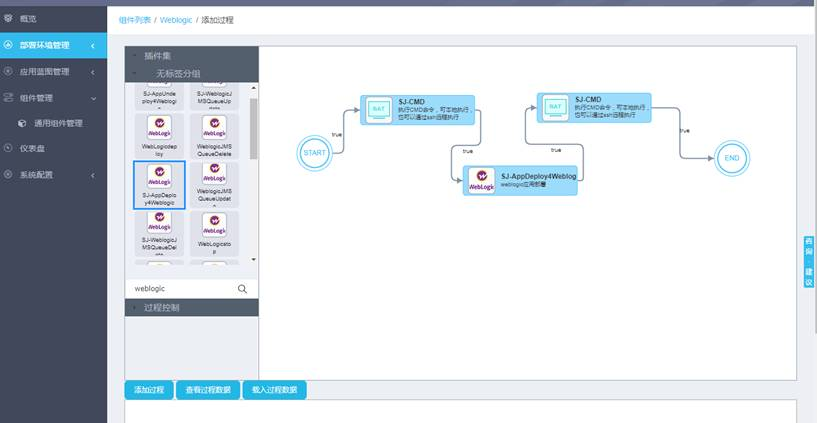
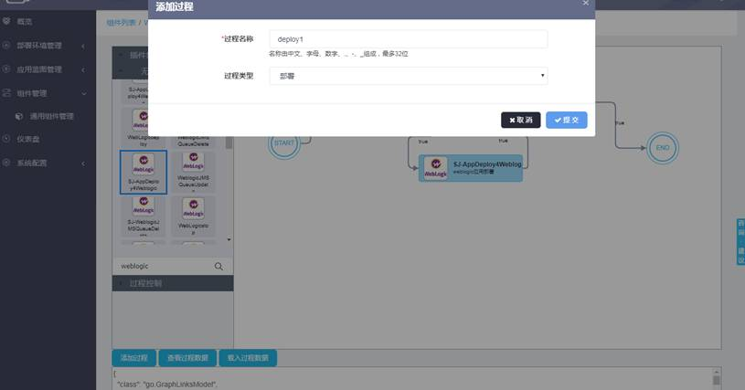

通用组件列表页面，在目标组件的右侧，点击“过程”->“添加过程”按钮为组件添加过程。
点击“添加过程”后，进入组件过程设计器界面，左侧工具栏提供“操作集”和“过程控制”，“过程控制”提供控制节点，如开始、结束、单一条件、聚合（目前立即结束、用户任务、分支暂不支持），“操作集”提供各种内置操作（有关操作，详见操作管理小节）；设计器以拖拽的方式完成组件过程的逻辑设计，如下图所示。有关组件过程的使用方法参见附录一（组件过程设计器操作指南）。

组件过程设计完成后，点击“添加过程”按钮，在弹出的对话框中填写“过程名称”、选择“过程类型”，点击“确定”完成组件过程的添加。如果拷贝已有过程，可以复制其过程json描述信息，粘贴到“添加过程”下面的空白处，点击“载入过程数据”也可完成过程的设计，点击“添加过程”完成添加操作。
